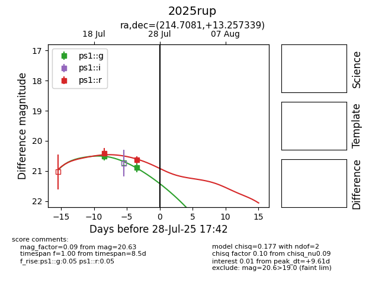

Target 2025rup at 2025-07-28 17:42, see:
YSE: ziggy.ucolick.org/yse/transient_detail/2025rup
alt names
2025rup (yse)
coordinates:
equatorial (ra, dec) = (214.7081,+13.25734)
galactic (l, b) = (3.0844,+65.31454)
photometry
last ps1::g=20.89, ps1::r=20.63
2 ps1::g, 2 ps1::r detections
